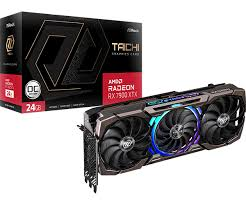

GeForce RTX 4090 (NVIDIA)
GeForce RTX 4090 — флагманская игровая видеокарта NVIDIA, выпущенная в 2022 году на архитектуре Ada Lovelace. Она оснащена 24 ГБ памяти GDDR6X, работает на базе 16384 потоковых процессоров и обладает частотой ядра до 2520 МГц. Пиковая производительность превышает 82 TFLOPS, что делает её одной из самых мощных карт для игр и профессиональных задач.

Энергопотребление RTX 4090 составляет до 450 Вт, для работы требуется блок питания от 850 Вт. Пропускная способность памяти достигает 1008 ГБ/с, а шина памяти — 384 бит. Карта поддерживает трассировку лучей 3-го поколения и технологии DLSS 3.
GeForce RTX 4070 Ti (NVIDIA)
GeForce RTX 4070 Ti — высокопроизводительная видеокарта среднего класса на архитектуре Ada Lovelace. Она оснащена 12 ГБ памяти GDDR6X, имеет 7680 потоковых процессоров и базовую частоту ядра около 2310 МГц.
Пропускная способность памяти составляет 504 ГБ/с, а энергопотребление — около 285 Вт. Карта поддерживает трассировку лучей и DLSS 3, обеспечивая комфортный игровой процесс в 1440p и 4K-разрешениях.
RTX 4070 Ti обеспечивает более 120 кадров в секунду в 1440p и около 60–90 кадров в 4K в современных играх.
Энергопотребление RTX 4090 составляет до 450 Вт, для работы требуется блок питания от 850 Вт. Пропускная способность памяти достигает 1008 ГБ/с, а шина памяти — 384 бит. Карта поддерживает трассировку лучей 3-го поколения и технологии DLSS 3.
 Radeon RX 7900 XTX (AMD)
Radeon RX 7900 XTX — топовая видеокарта AMD на архитектуре RDNA 3, представленная в конце 2022 года. Она оснащена 24 ГБ памяти GDDR6 и 6144 потоковыми процессорами, а тактовая частота ядра достигает 2500 МГц.
Пропускная способность памяти составляет 960 ГБ/с при шине 384 бита. Энергопотребление видеокарты достигает 355 Вт, рекомендуется блок питания от 800 Вт.
RX 7900 XTX обеспечивает отличную производительность в 4K, конкурируя с RTX 4080, и поддерживает трассировку лучей, а также фирменную технологию FSR 2 для масштабирования изображения.